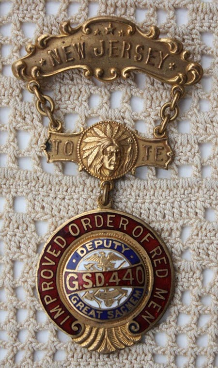

Ward-Thomas Museum


Red Man Lodge
Ward — Thomas
Museum
Home of the Niles Historical Society
503 Brown Street Niles, Ohio 44446
Click here to become a Niles Historical Society Member or to renew your membership
Click on any photograph to view a larger image, click on image again to zoom into photograph.
|
A view of the exterior of the building that housed the Redman's Lodge on the second floor; as well as The Niles Daily News and the East Ohio Gas Company. It was located on South Main Street before the construction of the viaduct(possibly between West State Street and Water Street). South Main Street is sloping down to the PRR tracks and Mahoning River since the viaduct was not built until 1933. PO2.286 |
Improved Order of the Redman Lodge. Redman Lodge, like Niles, also Celebrates the
Centennial This Week. Co-incident with the City of Niles, Ohio, the Improved Order of Redmen is celebrating its Centennial the week of September 10th, 1934. The celebration is to be held at Baltimore, Maryland where the order was instituted and has grown until it now has over five hundred thousand members, all of whom are citizens of the United States. Genesee Tribe No. 15 of Niles, Ohio, was instituted in March 1904. The first meeting place was in the Frech building now occupied by the American Legion, with the following officers in charge: Prophet, A. D. Williams; Sachem, L. W. Bach; Senior Sagamore, E. V. Rader; Junior Sagamore, Robert McCarty; Collector of Wampum, I. Campbell; Keeper of Wampum, I. Don Holeton. The Genesee Tribe met in this location for two years until the completion of the Morgan-Williams building which was designed especially for the order and is still the home of the Redmen. A feature peculiar to the Redmen is the care of the orphans of deceased members. They maintain no orphan’s home but contribute to the support of the children in their own homes. The degrees of the order are founded on the customs and traditions of the American Aborigine and the League of the Iroquois. The motto is Freedom, Friendship, and Charity. Meetings are held weekly on Wednesday evening
in Redmen Hall. In charge of Sachem, Edward Reese; Senior
Sagamore, Roy Campbell; Junior Sagamore, A. Zigler;
Keeper of Wampum, D. L. Boyd; Trustees: Chas. Duff,
C. A. Edwards, J. T. Rose. |
|
| |
||
Left: A photo of the members of the Niles “Red Man Lodge” in front of the Odd Fellows Hall on North Main Street. October 12, 1918 for a special Columbus Day parade.In the background is the site of the McKinley Memorial. PO1.1606 Right: An advertisement for a Redmans Lodge dance
at the Redman Hall. It appeared in the October 17, 1914 edition
of the Niles Daily Times. PO1.2340 |
||
| |
||
 New Jersey Sachem Medallion of the Improved Order of the Redman. |
History
of the Improved Order of the Redman. Membership On December 16, 1773, a group of colonists — all men, and members of the Sons of Liberty — met in Boston to protest the tax on tea imposed by England. When their protest went unheeded, they disguised themselves as their idea of Mohawk people, proceeded to Boston harbor, and dumped overboard 342 chests of English tea. In the late 18th century, the Tammany Societies, named after Tamanend, were formed. The most well-known of these was New York City’s Society of St. Tammany, which grew into a major political machine known as “Tammany Hall.” For the next 35 years, the original Sons of Liberty and the Sons of St. Tamina groups went their own way, under many different names. Around 1813, a disenchanted group created the philanthropic “Society of Red Men” at historic Fort Mifflin in Philadelphia. The organization grew in the 1820s. Parallel lines of advancement were offered in the Order of Red Men: a series of military titles and a set of Indian rankings. Class and ethnic differences introduced by new immigrants, anti-Masonic persecutions, attacks on fraternal groups based on excessive drinking, and, ultimately, a wide-spread cholera epidemic in 1832 led to the decline of the organization. In 1834, the Improved Order of Red Men (IORM) was started as a revival in Baltimore. It was focused on temperance, patriotism and American History. In 1835, with only two tribes in place, a larger IORM was organized. Unlike the original Order, the IORM uses only expanded Indian titles. Rather than the public display of Indian costumes, the IORM uses its regalia in private gatherings. |
|
| |
||
| In 1886, its membership requirements were defined in the same pseudo-Indian phrasing as the rest of the constitution: Sec. 1. No person shall be entitled to adoption into the Order except a free white male of good moral character and standing, of the full age of twenty-one great suns, who believes in the existence of a Great Spirit, the Creator and Preserver of the Universe, and is possessed of some known reputable means of support. In one 1886 tribe, a member’s 12 cent a week dues went into a fund which was used to pay disability benefits to members at a rate of about “three fathoms per seven suns” ($3/week) for up to "six moons” (6 months) and then two dollars a week. Some medical care (“a suitable nurse”) was available, and also a death benefit of one hundred dollars. The fund was invested in bonds, mortgages, and “Building Association Stock”. Meetings were held weekly on Friday nights. The Order has a three tiered structure. Local units are called “Tribes” and are presided over by a “Sachem” and a board of directors. Local meeting sites are called “Wigwams”. The state level is called the “Reservation” and governed by a “Great Sachem” and “Great Council” or “Board of Chiefs”. The national level is the “Great Council of the United States”. The Great Council consists of the “Great Incohonee” (president), and a “Board of Great Chiefs”, which includes the “Great Senior Sagamore” (first vice-president), “Great Junior Sagamore”, “Great Chief of Records” (secretary), “Great Keeper of the Wampum” (treasurer) and “Prophet” (past president). The headquarters of the Order has been in Waco, Texas, since at least 1979. They maintain an official museum and library in Waco. Auxiliaries and side degrees In 1952, the Order created the Degree of Hiawatha, as a youth auxiliary for males 8 and up. Most of the members of the Degree of Hiawatha were concentrated in New England. In 1979 there were less than 5,000 members in approximately 125 “Councils”. The Order female auxiliary is the Degree of Pocahontas and dates to the 1880s and the Degree of Anona, a junior order of the Degree of Pocahontas, was formed in 1952. |
||
|
Unknown Author: http://collections.mnhs.org/cms/display?irn=10706288 |
Philanthropy
and positions The IORM supported the founding of the Society of American Indians in 1911 and helped organize the SAI’s first two conferences. |
|
| |
||
| Source: http://redmen.org/redmen/info/ America's Oldest The fraternity traces its origins back to 1765 and is descended from the Sons of Liberty. These patriots concealed their identities and worked “underground” to help establish freedom and liberty in the early Colonies. They patterned themselves after the great Iroquois Confederacy and its democratic governing body. Their system, with elected representatives to govern tribal councils, had been in existence for several centuries. After the War of 1812 the name was changed to the Society of Red Men and in 1834 to the Improved Order of Red Men. They kept the customs and terminology of Native Americans as a basic part of the fraternity. Some of the words and terms may sound strange, but they soon become a familiar part of the language for every member. The Improved Order of Red Men (IORM) is similar in many ways to other major fraternal organizations in the United States. The Improved Order of
Red Men is a national fraternal organization that believes in…Love
of and respect for the American Flag. History of the Red Men On December 16, 1773 a group of men, all members of the Sons of Liberty, met in Boston to protest the tax on tea imposed by England. When their protest went unheeded, they disguised themselves as Mohawk Indians, proceeded to Boston harbor, and dumped overboard 342 chests of English tea. During the Revolutionary War, members of secret societies quenched their council fires and took up muskets to join with the Continental Army. To the cause of Freedom and Liberty they pledged their lives, their fortunes, and their sacred honors. At the end of the hard fought war the American Republic was born and was soon acknowledged among the nations of the world. Following the American Revolution many of the various secret societies founded before and during the conflict continued in existence as brotherhoods or fraternities. For the next 35 years, however, each of the original Sons of Liberty and Sons of St. Tamina groups went their own way, under many different names. In 1813, at historic Fort Mifflin, near Philadelphia, several of these groups came together and formed one organization known as the Society of Red Men. The name was changed to the Improved Order of Red Men in Baltimore in 1834. At Baltimore, Maryland, in 1847, the various local tribes came together and formed a national organization called the Grand Council of the United States. With the formation of a national organization, the Improved Order of Red Men soon spread, and within 30 years there were State Great Councils in 21 states with a membership of over 150,000. The Order continued to grow and by the mid-1920s there were tribes in 46 states and territories with a membership totaling over one-half million. Today, The Improved Order of Red Men continues to offer all patriotic Americans an organization that is pledged to the high ideals of Freedom, Friendship, and Charity. These are the same ideals on which the American nation was founded. By belonging to this proud and historic organization you can demonstrate your desire to continue the battle started at Lexington and Concord to promote Freedom and protect the American Way of Life. Goals of the Red Men Flag Recognition Program —
A program to honor those patriotic Americans who display the
flag regularly. Charitable Programs |
||
|
|
||
{kind=link}
{kind=link}
{kind=link}